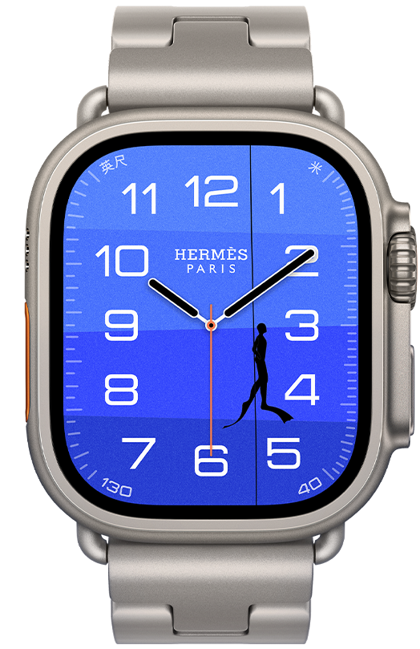

产品宣传图所示款式。图片说明列出所示机型与组件。
下方的文件数包括本地化资源。固件名称键能确认包的归属；组件的圆屏点击边界、亮屏过渡与 AOD 对照均待设备验证。
原始包 已解析属性表 Mach-O 方法与成员 ARM64 汇编 解出的图集
.strings × 44 .png × 12 .car × 1 .metallib × 1 .plist × 1 无扩展名 × 1
原始包 已解析属性表 Mach-O 方法与成员 ARM64 汇编 解出的图集
.strings × 44 .png × 12 .car × 1 .metallib × 1 .plist × 1 无扩展名 × 1
原始包 已解析属性表 Mach-O 方法与成员 ARM64 汇编 解出的图集
.strings × 44 .png × 12 .car × 1 .metallib × 1 .plist × 1 无扩展名 × 1
NTKHermes2026FaceBundle.bundleHERMES2026_FACE_DESCRIPTIONHERMES2026_FACE_SHORT_DESCRIPTION色组与设备条件 共享色组与默认值
-[_TtC23NTKHermes2026FaceBundle18Hermes2026FaceView tritium_didTransitionToTritiumOn];-[_TtC23NTKHermes2026FaceBundle18Hermes2026FaceView tritium_didTransitionToTritiumOff];-[_TtC23NTKHermes2026FaceBundle18Hermes2026FaceView tritium_createFaceAnimator];-[_TtC23NTKHermes2026FaceBundle18Hermes2026FaceView tritium_animationToCurrentDateFromDate:];-[_TtC23NTKHermes2026FaceBundle18Hermes2026FaceView tritium_alwaysOnTimelines];-[_TtC23NTKHermes2026FaceBundle18Hermes2026FaceView tritium_willTransitionToTritiumOnToFrameSpecifier:];-[_TtC23NTKHermes2026FaceBundle18Hermes2026FaceView tritium_willTransitionToTritiumOffFromFrameSpecifier:];-[_TtC23NTKHermes2026FaceBundle18Hermes2026FaceView tritium_didTransitionToTritiumOn];-[_TtC23NTKHermes2026FaceBundle18Hermes2026FaceView tritium_didTransitionToTritiumOff];-[_TtC23NTKHermes2026FaceBundle18Hermes2026FaceView tritium_createFaceAnimator];-[_TtC23NTKHermes2026FaceBundle18Hermes2026FaceView tritium_animationToCurrentDateFromDate:];-[_TtC23NTKHermes2026FaceBundle18Hermes2026FaceView tritium_alwaysOnTimelines];-[_TtC23NTKHermes2026FaceBundle18Hermes2026FaceView _configureForTransitionFraction:fromEditMode:toEditMode:];-[_TtC23NTKHermes2026FaceBundle18Hermes2026FaceView tritium_willTransitionToTritiumOnToFrameSpecifier:];-[_TtC23NTKHermes2026FaceBundle18Hermes2026FaceView tritium_willTransitionToTritiumOffFromFrameSpecifier:];-[NTKHermes2026AnalogNumeralsView setTintColor:];-[NTKHermes2026AnalogNumeralsView layoutSubviews];+[_TtC23NTKHermes2026FaceBundle14Hermes2026Face _complicationSlotDescriptors];+[_TtC23NTKHermes2026FaceBundle14Hermes2026Face _richComplicationSlotsForDevice:];+[_TtC23NTKHermes2026FaceBundle14Hermes2026Face _orderedComplicationSlots];-[_TtC23NTKHermes2026FaceBundle14Hermes2026Face _localizedNameForDynamicSectionCustomEditMode:slot:];-[_TtC23NTKHermes2026FaceBundle14Hermes2026Face curatedGalleryBackgroundColors];-[_TtC23NTKHermes2026FaceBundle14Hermes2026Face _numberOfOptionsForCustomEditMode:slot:];-[_TtC23NTKHermes2026FaceBundle14Hermes2026Face _defaultOptionForCustomEditMode:slot:];-[_TtC23NTKHermes2026FaceBundle14Hermes2026Face _indexOfOption:forCustomEditMode:slot:];-[_TtC23NTKHermes2026FaceBundle14Hermes2026Face _optionAtIndex:forCustomEditMode:slot:];-[_TtC23NTKHermes2026FaceBundle18Hermes2026FaceView _applyBreathingFraction:forCustomEditMode:slot:];-[_TtC23NTKHermes2026FaceBundle18Hermes2026FaceView _filterProviderForSlot:];-[_TtC23NTKHermes2026FaceBundle18Hermes2026FaceView _prepareForEditing];-[_TtC23NTKHermes2026FaceBundle18Hermes2026FaceView _cleanupAfterEditing];-[_TtC23NTKHermes2026FaceBundle18Hermes2026FaceView _keylineStyleForComplicationSlot:];-[_TtC23NTKHermes2026FaceBundle18Hermes2026FaceView configureComplicationViewDisplayWrapper:forSlot:];-[_TtC23NTKHermes2026FaceBundle18Hermes2026FaceView _configureComplicationView:forSlot:];-[_TtC23NTKHermes2026FaceBundle18Hermes2026FaceView _loadLayoutRules];-[_TtC23NTKHermes2026FaceBundle18Hermes2026FaceView _applyRubberBandingFraction:forCustomEditMode:slot:];-[_TtC23NTKHermes2026FaceBundle23Hermes2026MiniClockView layoutSubviews];-[_TtC23NTKHermes2026FaceBundle24Hermes2026BackgroundView layoutSubviews];